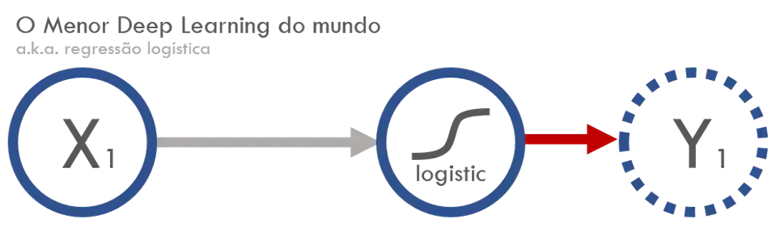
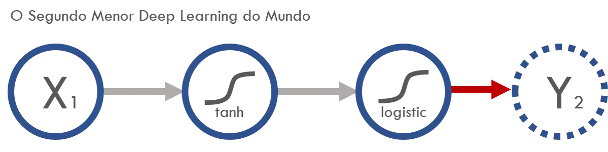
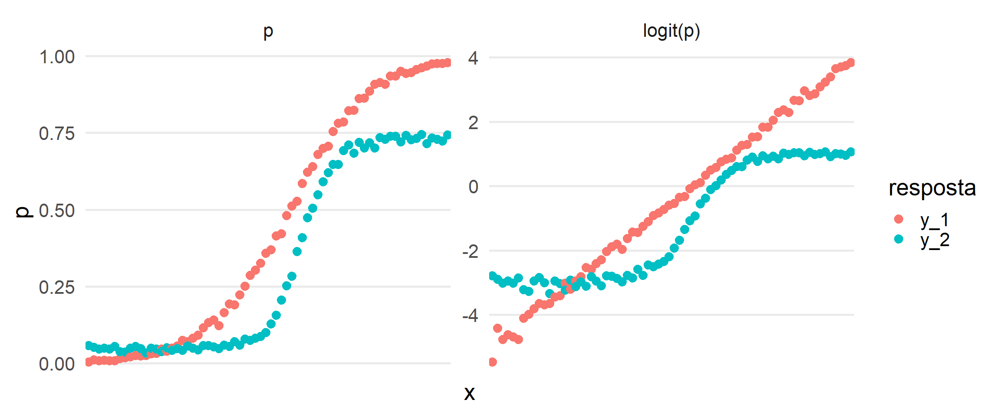
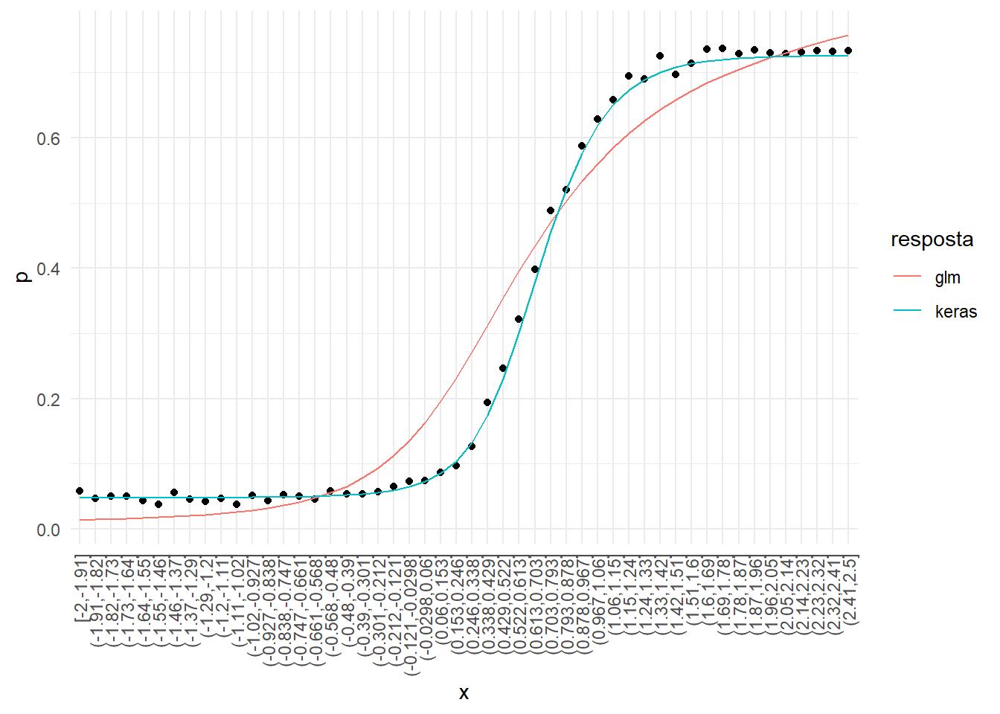
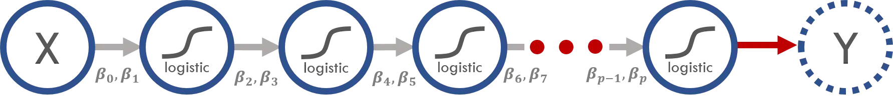

library(keras)
library(dplyr)
library(tidyr)
library(forcats)
library(ggplot2)Logistic Regression in: the world’s smallest deep learning
concepts
deep learning
neural networks
logistic regression
keras
glm
Deep learning is big news, but there are many myths around it that end up scaring away people who could benefit from it and contribute to the data analyst community. This post aims to open the black box a little to bust some of these fables.
Goals
The purpose of this post is to:
- learn how to fit a logistic regression with keras
- learn how to do a PCA with keras
- bring Deep Learning closer to what most data analysts already knew.
- encourage everyone who came before deep learning to study it and get comfortable with what’s new around it.
- show that many professionals in the machine learning field already knew a large part of what deep learning uses.
- raise a discussion about some myths that are not constructive for the data analyst community.
Motivation
I read statisticians, computer scientists, data engineers and the like questioning the future of Machine Learning and whether everything we knew before about statistical modeling had become obsolete (like this question on Quora: Should I Quit Machine Learning?).
And in conversations with people close to me I noticed some excitement about the novelty and frustration with the “obsolescence” of what they had spent time studying before.
To make it worse, opportunists rode this wave to do malicious marketing aimed at devaluing and dividing the data analyst community. Something very similar to what happened with other buzzwords like data science, big data, Python versus R and machine learning itself. Before, there was the classic advertising that company X used MACHINE LEARNING instead of predictive models. Now things have evolved and they resort to the word Deep Learning.
What really matters:
- Deep Learning is big news and has put Artificial Intelligence in the spotlight.
- Whoever knew Machine Learning before will be able to apply 95% of their knowledge in Deep Learning applications (including bayesianism, bootstrap, inference, probability and the whole lot).
- Deep Learning has to be seen as one more tool in the data analyst’s toolbox, not a replacement.
And to address this question I decided to fit a logistic regression using deep learning so that everyone who has ever fit a logistic regression can say they have built a neural network too! I confess a slightly provocative motivation, but what fun would it be otherwise? =P
What we’ll do
- Logistic regression for \(Y_1\) (with
glm) - Deep Learning for \(Y_1\) (with
keras) - Show that logistic regression is not the best for \(Y_2\) and that Deep Learning goes beyond the limitation of linear models (with
glm) - Deep Learning for \(Y_2\) (with
keras)
Let’s get to work.
Packages
Logistic regression versus Deep Learning
Time to fit models to the same data in two different ways: logistic regression with glm and deep learning with keras.
Simulated data
logit <- function(p) log(p) - log(1 - p)
logistic <- function(x) 1/(1 + exp(-x))
n <- 100000
set.seed(19880923)
df <- data_frame(x = runif(n, -2, 2.5)) %>%
mutate(y_1 = rbinom(n, 1, prob = logistic(-1 + 2 * x)), # y_1
y_2 = rbinom(n, 1, prob = logistic(-1 + 2 * tanh(-1 + 2 * x)))) # y_2The code above created two response variables (targets). In mathematical notation, they are defined as follows:
Response y_1
\[E[Y_1|x] = \text{logistic}{(-1 + 2x)} = \frac{1}{1 + e^{{-(-1 + 2x)}}}\]
Response y_2
\[E[Y_2|x] = \text{logistic}{(-1 + 2\tanh(-1 + 2x))} = \frac{1}{1 + e^{{-(-1 + 2\tanh(-1 + 2x))}}}\]
\(x\) is linear in the logit of y_1, so logistic regression will do well at finding the parameters \(-1\) and \(2\). However, \(x\) is not linear in the logit of y_2, so logistic regression won’t be able to faithfully represent the generator of y_2.
NOTE 1: The form \(\text{logistic}{(\beta_0 + \beta_1\tanh(\beta_2 + \beta_3X))}\) has parameters inside the tanh function, which means our hypothesis for \(E[Y_2|x]\) is no longer linear in the parameters. That’s why linear models (as the name suggests) are no longer suitable. And non-linearity is one of the generalizations neural networks give us! (yes, this is very relevant)
NOTE 2: of course, in this very simple one-variable case we could inspect the data to find good transformations of \(x\) so that the logistic fit would be as good as a neural network’s, but if we added many other variables things would get complicated!
In neural network notation, the formulas above look like this:
Response y_1

Response y_2

What was a link function in GLM became an activation function in neural networks (at the end I talk more about vocabulary that changed).
A look at the data
# skimr::skim(df) %>% skim_print %>% with(numeric) %>% mutate_if(is.numeric, round, 2) %>% DT::datatable()
df %>%
gather(y_id, y_val, y_1, y_2) %>%
mutate(x_cat = cut_number(x, n = 70)) %>%
group_by(x_cat, y_id) %>%
summarise(p = mean(y_val),
n = n()) %>%
mutate(logit_p = logit(p)) %>%
gather(transformacao, p, p, logit_p) %>%
mutate(transformacao = transformacao %>% fct_inorder %>% fct_recode("logit(p)" = "logit_p")) %>%
ggplot() +
geom_point(aes(x = x_cat, y = p, colour = y_id)) +
theme_minimal(20) +
theme(axis.text.x = element_text(angle = 90, hjust = 1, vjust = 0.5)) +
facet_wrap(~forcats::fct_inorder(transformacao), nrow = 1, scales = "free_y") +
labs(x = "x", colour = "resposta") +
theme(axis.text.x = element_blank(),panel.grid.major.x = element_blank(), panel.grid.minor.y = element_blank())
## `summarise()` has grouped output by 'x_cat'. You can override using the
## `.groups` argument.
The plot on the right shows that x is proportional to the logit of the probabilities of y_1 (in red), as it should be since we built it that way. With y_2 (in blue), it still looks like a sigmoid even after the transformation.
Fitting the models
Logistic regression for \(Y_1\) (with glm)
# glm model 1 -------------------------------------------------------
modelo_glm_1 <- glm(y_1 ~ x, data = df, family = binomial)# coefficients
coef(modelo_glm_1)
# (Intercept) x
# -1.018434 2.011647
# accuracy
conf_matrix_glm_1 <- table(modelo_glm_1$fitted.values > 0.5, df$y_1)
sum(diag(conf_matrix_glm_1))/sum(conf_matrix_glm_1)
# [1] 0.85061The estimates came out very close to the true values \(\beta_0 = -1\) and \(\beta_1 = 2\).
The accuracy was 85%.
Deep Learning for \(Y_1\) (with keras)
Let’s build our hypothesis for \(E[Y_1|x]\).
# keras model 1 --------------------------------------------------------
# input: 1 variable: x.
input_keras_1 <- layer_input(1, name = "modelo_keras_1")
# output: there are no hidden layers, only the logit link function directly.
output_keras_1 <- input_keras_1 %>%
layer_dense(units = 1, name = "camada_unica") %>%
layer_activation("sigmoid", input_shape = 1, name = "link_logistic") # sigmoid in tensorflow is the logistic
# keras_model is what builds our hypothesis f(x) (from E[y] = f(x))
modelo_keras_1 <- keras_model(input_keras_1, output_keras_1)
#
summary(modelo_keras_1)Model
_____________________________________________________________
Layer (type) Output Shape Param #
=============================================================
modelo_keras_1 (InputLayer) (None, 1) 0
_____________________________________________________________
camada_unica (Dense) (None, 1) 2
_____________________________________________________________
link_logistic (Activation) (None, 1) 0
=============================================================
Total params: 2
Trainable params: 2
Non-trainable params: 0
_____________________________________________________________The hypothesis we built has 2 parameters. Looks right! \(\beta_0\) and \(\beta_1\).
Now it’s the loss function’s turn.
Since our goal is to build a logistic regression, we’ll choose the binary_crossentropy loss function, which is a synonym for the logistic deviance, the more common term in the statistics world.
The 'accuracy' metric doesn’t go into the loss function optimizer; we use it to compare the models we create. Here we’ll compare against the glm model fitted above (but, for example, with rare events 'accuracy' won’t be very informative, so we could use 'auc', 'gini', etc.).
modelo_keras_1 %>% compile(
loss = 'binary_crossentropy',
optimizer = optimizer_sgd(lr = 0.4),
metrics = c('accuracy')
)
modelo_keras_1_fit <- modelo_keras_1 %>% fit(
x = df$x,
y = df$y_1,
epochs = 20,
batch_size = 1000,
verbose = 0
)# coefficients
modelo_keras_1 %>% get_layer("camada_unica") %>% get_weights
# [[1]]
# [,1]
# [1,] 2.000054
#
# [[2]]
# [1] -1.015561
# accuracy
loss_and_metrics_1 <- modelo_keras_1 %>% evaluate(df$x, df$y_1, batch = 100000, verbose = 0)
loss_and_metrics_1[[2]]
# [1] 0.85053Identical results! It had to be so, because we built the same hypothesis and the same loss function as glm.
Logistic regression for \(Y_2\) (with glm)
To model \(Y_2\) we’ll step onto ground that linear models don’t tread. First I try to fit a curve using x and the transformation tanh(x). Let’s suppose I chose this predictor after a thorough and lengthy inspection of the data (I tried to simulate roughly what I would do in a modeling task where I’d have to build the features by hand).
# glm model 2 -------------------------------------------------------
modelo_glm_2 <- glm(y_2 ~ x + tanh(x), data = df, family = binomial)
# coefficients
coef(modelo_glm_2)
# (Intercept) x tanh(x)
# -1.6698641 0.3043212 2.0936353
# accuracy
conf_matrix_glm_2 <- table(modelo_glm_2$fitted.values > 0.5, df$y_2)
sum(diag(conf_matrix_glm_2))/sum(conf_matrix_glm_2)
# [1] 0.8220482% accuracy, not bad. But the hypothesis and parameters were different from the true data generator. Let’s use neural networks to solve the non-linearity problem.
Deep Learning for \(Y_2\) (with keras)
Hypothesis for \(E[Y_2|x]\).
# keras model 2 --------------------------------------------------------
input_keras_2 <- layer_input(1, name = "modelo_keras_2")
output_keras_2 <- input_keras_2 %>%
layer_dense(units = 1, name = "camada_um") %>%
layer_activation("tanh", input_shape = 1, name = "tanh_de_dentro") %>%
layer_dense(units = 1, input_shape = 1, name = "camada_dois") %>%
layer_activation("sigmoid", input_shape = 1, name = "link_logistic")
modelo_keras_2 <- keras_model(input_keras_2, output_keras_2)
summary(modelo_keras_2)Model
_____________________________________________________________
Layer (type) Output Shape Param #
=============================================================
modelo_keras_2 (InputLayer) (None, 1) 0
_____________________________________________________________
camada_um (Dense) (None, 1) 2
_____________________________________________________________
tanh_de_dentro (Activation) (None, 1) 0
_____________________________________________________________
camada_dois (Dense) (None, 1) 2
_____________________________________________________________
link_logistic (Activation) (None, 1) 0
=============================================================
Total params: 4.0
Trainable params: 4.0
Non-trainable params: 0.0
_____________________________________________________________
Four ‘trainable’ parameters, that’s it! Two parameters inside the tanh and the two parameters outside. We need keras to give us back -1, 2, -1 and 2, the way we generated the data.
Cost function
modelo_keras_2 %>% compile(
loss = 'binary_crossentropy',
optimizer = optimizer_sgd(lr = 0.1),
metrics = c('accuracy')
)
modelo_keras_2_fit <- modelo_keras_2 %>% fit(
x = df$x,
y = df$y_2,
epochs = 20,
batch_size = 100,
verbose = 0
)
# coefficients
modelo_keras_2 %>% get_layer("camada_um") %>% get_weights
# [[1]]
# [,1]
# [1,] 2.012015
#
# [[2]]
# [1] -1.058052
modelo_keras_2 %>% get_layer("camada_dois") %>% get_weights
# [[1]]
# [,1]
# [1,] 1.981977
#
# [[2]]
# [1] -1.006567
# accuracy
loss_and_metrics_2 <- modelo_keras_2 %>% evaluate(df$x, df$y_2, batch_size = 100000)
loss_and_metrics_2[[2]]
# [1] 0.8222182% accuracy as well, but now the parameters are very close to the ones that generated the data! We just saw a set of parameters being found even with a non-linear relationship between them and the mean.
The accuracy of the two models ended up about the same, but the plot of the hypotheses found (below) shows that the glm curve is worse than the keras curve.
df %>%
select(x, y_2) %>%
mutate(x_cat = cut_number(x, n = 50)) %>%
group_by(x_cat) %>%
summarise(p = mean(y_2),
x = mean(x),
keras = logistic(-1.006567 + 1.981977 * tanh(-1.058052 + 2.012015 * x)),
glm = logistic(-1.6698641 + 0.3043212*x + 2.0936353 * tanh(x)),
n = n()) %>%
mutate(logit_p = logit(p)) %>%
gather(Modelo, estimativa, keras, glm) %>%
ggplot() +
geom_point(aes(x = x_cat, y = p)) +
geom_line(aes(x = x_cat, y = estimativa, colour = Modelo, group = Modelo)) +
theme_minimal() +
theme(axis.text.x = element_text(angle = 90, hjust = 1, vjust = 0.5)) +
labs(x = "x", colour = "resposta")
(Bonus) PCA with an autoencoder
In practice, PCA and autoencoders are used to reduce the dimensionality of the data. PCA is a particular case of an autoencoder with only one layer and linear activation functions. The post Construindo Autoencoders (in Portuguese) shows how to build one and I recommend reading it.
Summary: the autoencoder is an amazing technique that generalizes PCA.
Discussion
In my opinion, what happened is that a lot of old, well-established stuff had its name changed and was presented as new, and this ended up overshadowing the truly relevant contributions of research around neural networks and deep learning.
You can see that Deep Learning has generalized quite a lot, so I declare this post a success if what’s written above sparked curiosity to learn more about deep learning and add it to the work that was already being done. It’s more worthwhile to bring all statistics and machine learning practitioners together in this novelty than to divide ourselves.
I believe that, more than ever, theoretical foundations and interpretation will have their value boosted by the spread of deep learning. With the myth that deep learning is a panacea, and with how easy it has made building a predictive model, there’s a risk of being buried by black boxes made by people who neglect important aspects like interpretability, causality and generalization. Maybe bayesianism will emerge (once again) as the solution to qualitative problems in an increasingly obscure world, shedding light on the excesses of complex models and the benefits of simple ones.
Speaking of bayesianism (and inference in general), the results already obtained for linear models still apply to deep learning. And we also have the advantage that all the other tools used in deep learning that don’t affect the linearity of the parameters can be used, like convolutional, recurrent, max pooling, drop out, autoencoder and so many others.
To wrap up, in practice I suggest applying deep learning with Keras, an amazing package that uses tensorflow or theano behind the scenes. I believe you’ll see many posts about it here! (feel free to pester Dan Falbel, one of the partners of curso-r.com, who is involved in developing this R package =]).
Fun facts
N-th smallest deep learning
Above we saw the smallest and the second smallest Deep Learnings (which have nothing deep about them =P). But we can go as deep as we want! The neural network representation comes out easily:

The mathematical representation, on the other hand, gets weird:
\[E[Y|x] = \frac{1}{1 + \exp{\left(\beta_{p-1} + \beta_p\frac{1}{\frac{\vdots}{1 + \exp{\left(\beta_{6} + \beta_{7}\frac{1}{1 + \exp{\left(\beta_4 + \beta_5\frac{1}{1 + \exp{\left(\beta_2 + \beta_3\frac{1}{1 + \exp{\left(\beta_0 + \beta_1x\right)}}\right)}}\right)}}\right)}}}\right)}}\]
Vocabulary
Deep learning jargon and terms were inherited from a context different from the predictive modeling studied in statistics, and so countless synonyms came up. Some of them are:
- activation function = link function
- Softmax = multinomial likelihood
- sigmoid = S-shaped function (in tensorflow the default is the logistic)
- weights = parameters/betas/coefficients
- binary crossentropy = deviance of the binomial distribution (logistic regression)
That’s it, we have to stay curious, ask questions and talk to each other. Cheers!